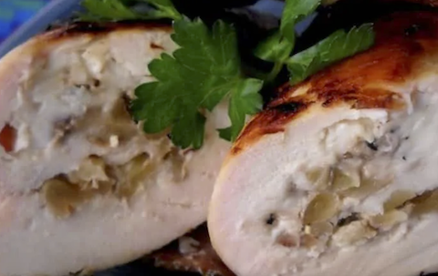

3. Rollitos de pollo con queso

El pollo es uno de los alimentos preferidos para los niños y si
además le añadimos queso y frutos secos, ¡no se podrán resistir!
Ingredientes
| Nombre |
Cantidad |
| Pollo |
2 pechugas |
| Queso Azul |
100gm |
| Nueces |
200gm |
| Bacon |
100gm |
Preparación
- Precalienta el horno a 170ºC.
- Con un rodillo amasa los filetes de pollo hasta que tengan un grosor uniforme.
Extiende sobre ellos el queso, las nueces picadas y enrolla.
- Coloca dos lonchas de bacon sobre una tabla y envuelve el rollito de pollo en ellas.
- Pincha de extremo a extremo con un palillo.
- En una sartén cocina hasta que el tocino esté dorado, alrededor de cuatro minutos por lado.
- Mete la receta en el horno y mantén de veinticinco a treinta minutos o hasta que el filete de este hecho.
Información nutricional
| Valores Medios por 100g |
Ración |
| Valor energético |
245 kcal |
100 kcal |
| Grasas |
9,3 g |
1,9 g |
| Hidratos de Carbono |
43 g |
9 g |
| Proteínas |
20 g |
2,5 g |
Si deseas más recetas de este estilo, podrás encontrar más aquí
Volver a inicio